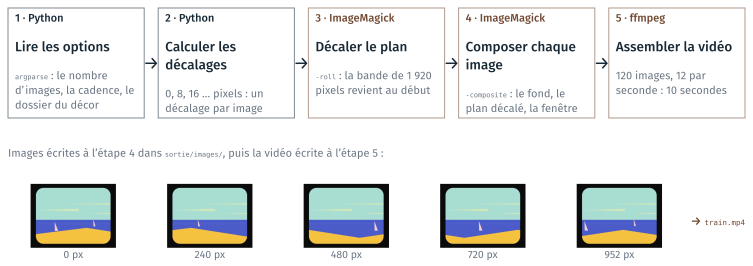

Une animation en ligne de commande#
Cette page est celle du parcours avancé. Le programme train.py fabrique
une courte vidéo, la vue d’une fenêtre de train, d’après la scène de la mer
du clip « Moon » de Kid Francescoli. Il lance deux programmes en ligne de
commande, ImageMagick et ffmpeg, qu’un environnement conda fournit. La page
présente ces outils, les étapes du programme, l’environnement et la façon
de lancer JupyterLab. Un TD l’accompagne, le TD 4c ; il est présenté en fin
de page.
Des outils en ligne de commande#
ImageMagick (magick) et ffmpeg sont des programmes en ligne de commande,
comme git (cours 2) et pandoc (cours 3). Le script Python les lance avec
subprocess.run : une fois par image pour magick, une fois à la fin pour
ffmpeg.
magick fond.png ( plan.png -roll -8+0 -crop 640x480+0+0 +repage ) -composite fenetre.png -composite img_0002.png
ffmpeg -framerate 12 -i img_%04d.png train.mp4
La première commande fait tourner la bande du plan de 8 colonnes vers la
gauche (-roll), en découpe 640 × 480 pixels (-crop), pose ce plan sur le
fond (-composite), puis pose la fenêtre par-dessus. La seconde assemble les images en vidéo, 12 images par
seconde ; %04d désigne un numéro écrit sur quatre chiffres, 0001,
0002…
magick et ffmpeg ne sont pas dans l’environnement base d’Anaconda :
un environnement conda les fournit.
Le programme train.py, étape par étape#
Python calcule la liste des décalages, puis, pour chaque décalage, lance
magick, qui compose l’image. ffmpeg assemble les 120 images.

Les étapes du programme train.py, et cinq images de la série.#
L’environnement animation#
environment.yml liste ce que le projet demande. conda env create crée
l’environnement à partir de ce fichier ; conda activate le rend actif dans
le terminal.
name: animation
channels:
- conda-forge
dependencies:
- python=3.12
- jupyterlab
- imagemagick
- ffmpeg
conda env create -f environment.yml
conda env list
conda activate animation
magick -version
ffmpeg -version
La création télécharge les paquets : plusieurs minutes. Dans Git Bash, une
fois par poste, conda doit d’abord être rendu disponible (guide du TD 4c,
étape A2).
JupyterLab lancé depuis l’environnement#
Le notebook appelle magick et ffmpeg : il les cherche dans le PATH du
terminal qui a lancé JupyterLab. JupyterLab se lance donc depuis le terminal
Git Bash de VS Code, l’environnement animation actif. Lancé depuis Anaconda
Navigator, JupyterLab tourne dans base, et la section 2 du notebook
affiche magick : None.
Deux branches, puis une fusion#
Le programme se construit en suivant la composition d’une image. Le fond est
écrit sur master ; la fenêtre et le plan sont développés sur deux branches
parties de ce commit, puis réunis :
Étape |
Ce qu’on fait |
|---|---|
B0 |
le dossier du projet, |
B1 |
le fond, sur |
B2 |
la fenêtre posée sur le fond, sur la branche |
B3 |
le plan, sur la branche |
B4 |
la fusion des deux branches : les deux ont modifié la fonction |
B5, B6 |
une série d’images, puis la vidéo, chacune sur sa branche |
B7, B8 |
le README ; en facultatif, |
TD de la partie#
TD 4c — La fenêtre du train, dans le dossier
cours4/4c_train/de l’archive, 105 minutes : l’environnementanimation, le notebooktrain.ipynb, puis le programmetrain.py, une branche git par fonctionnalité.
Les TD du parcours standard sont dans Travaux dirigés du projet 4.